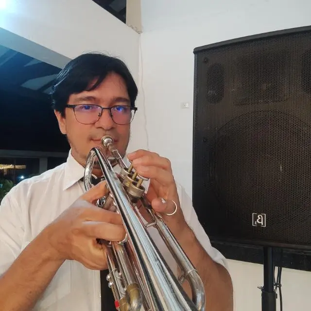
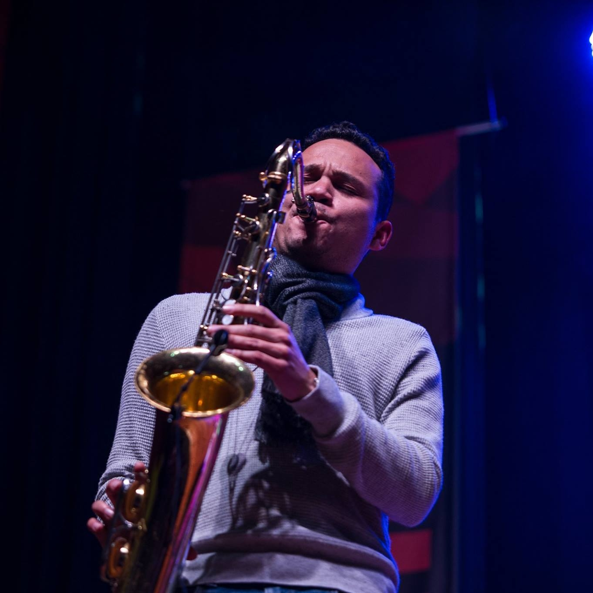
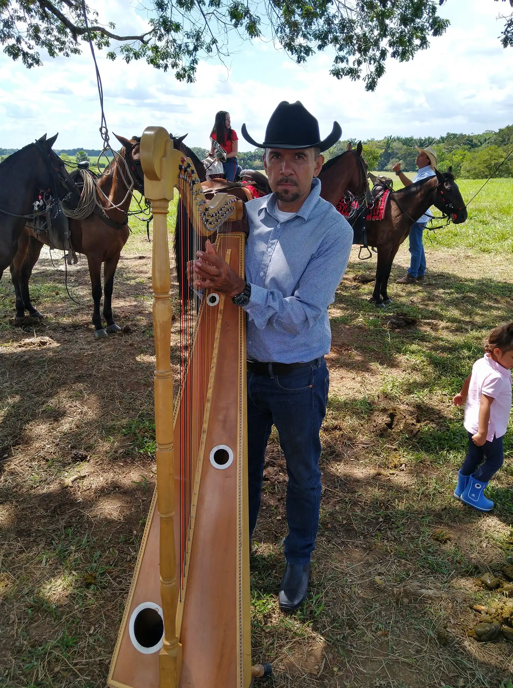
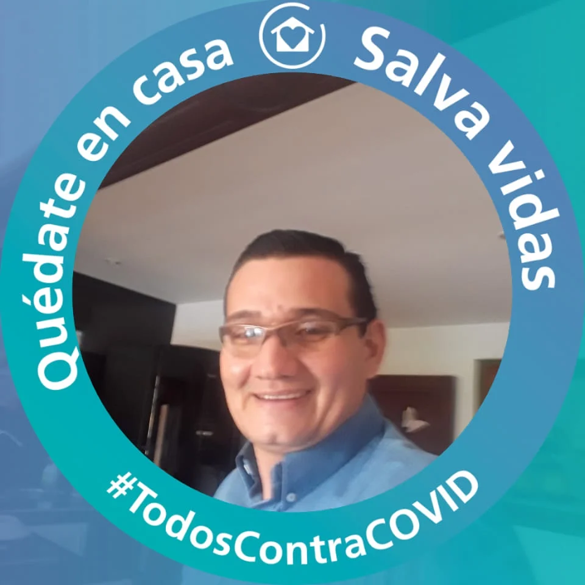
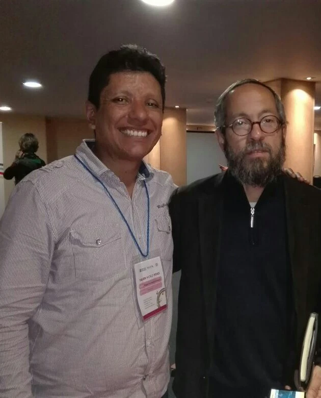

me siento orgullosa de ser parte de un equipo que trabaja incansablemente para que los niños tengan acceso a la música. Creo que la música es una herramienta poderosa para el desarrollo de habilidades cognitivas y emocionales.Mi labor se centra en garantizar que los recursos y la logística funcionen sin contratiempos para que nuestros programas lleguen a los niños, sembrando la semilla de la pasión musical en sus vidas.
Ser parte del equipo administrativo en Batuta Meta es una experiencia gratificante. Creo firmemente que la música puede cambiar vidas y construir un futuro mejor. Desde mi rol, me aseguro de que los programas y las actividades se ejecuten eficientemente para brindar oportunidades de aprendizaje musical de calidad a los niños de la región.
mi trabajo es apoyar el crecimiento y desarrollo de la música en la vida de los niños. Es inspirador ver cómo la música puede nutrir la creatividad y la expresión en los jóvenes. Trabajar aquí me llena de satisfacción porque sé que estamos sembrando semillas de pasión musical en las nuevas generaciones.
coordinador de centro
Cristian
coordinador de centro
Ser parte del equipo administrativo de Batuta Meta significa contribuir a una causa noble. Creo que la música es un puente hacia un mundo más enriquecedor y armonioso. Desde mi rol, busco asegurar que los recursos estén disponibles para que los niños tengan acceso a una educación musical de calidad. Es un trabajo que llena el alma.
profesor de trompeta

Daniel Restrepo
Docente Trompeta
Mi pasión es enseñar la trompeta a los niños. Sé que aprender a tocar un instrumento no solo es una habilidad valiosa, sino que también fortalece la disciplina y la confianza. Como docente, me enorgullece ser un guía musical y ayudar a los niños a descubrir el mundo de la música a través de la trompeta.
Jorge Vaca
Docente Trombon
Enseñar trombón a los niños es un regalo. Creo que la música es un lenguaje universal y el trombón es una forma poderosa de expresión. Mi objetivo es inspirar a los jóvenes a encontrar su voz musical y desarrollar habilidades que les servirán de por vida.

Eduardo
Docente Clarinete
Introducir a los niños en el fascinante mundo del clarinete es un regalo único. La música, como lenguaje universal, encuentra en el clarinete una expresión poderosa. Mi misión es inspirar a los jóvenes a descubrir su propia voz musical y cultivar habilidades que perdurarán a lo largo de sus vidas.
Despertar el interés de los niños por el saxofón es un regalo especial. La música, con su lenguaje universal, encuentra en el saxofón una forma única de expresión. Mi objetivo es inspirar a los jóvenes a descubrir su voz musical y desarrollar habilidades que les acompañarán a lo largo de toda la vida.

German
Docente iniciacion
Introducir el corno a los niños es un regalo maravilloso. La música, un lenguaje universal, se revela de manera única a través del corno, brindando una poderosa forma de expresión. Mi objetivo es inspirar a los jóvenes a descubrir su propia voz musical y cultivar habilidades que les serán valiosas a lo largo de toda su vida.
Explorar el mundo de la percusión con los niños es un regalo extraordinario. La música, como un lenguaje universal, se manifiesta de manera única a través de la percusión, ofreciendo una forma de expresión potente y llena de energía. Mi misión es inspirar a los jóvenes a descubrir su propia conexión con el ritmo, desarrollando habilidades musicales que les acompañarán a lo largo de toda su vida.
Adentrarse en el mundo del violín con los niños es un regalo especial. La música, siendo un lenguaje universal, encuentra en el violín una expresión única y conmovedora. Mi objetivo es inspirar a los jóvenes a descubrir la magia de este instrumento, cultivando habilidades musicales que les brindarán una hermosa compañía a lo largo de toda su vida.
Iniciar a los niños en el arte de la viola es un regalo maravilloso. La música, un lenguaje universal, encuentra en la viola una forma rica y emotiva de expresión. Mi objetivo es inspirar a los jóvenes a descubrir la belleza de este instrumento, fomentando el desarrollo de habilidades musicales que los acompañarán a lo largo de toda su vida.
Introducir a los niños al mundo del violín es un regalo único. La música, siendo un lenguaje universal, encuentra en el violín una forma mágica de expresión. Mi misión es inspirar a los jóvenes a descubrir la magia de este instrumento, cultivando habilidades musicales que los acompañarán a lo largo de toda su vida.
Enseñar violonchelo a los niños es un regalo invaluable. La música, como lenguaje universal, encuentra en el violonchelo una expresión profunda y conmovedora. Mi objetivo es inspirar a los jóvenes a descubrir la belleza única de este instrumento, cultivando habilidades musicales que perdurarán a lo largo de sus vidas.
Enseñar violín a los niños es una oportunidad maravillosa. La música, siendo un lenguaje universal, encuentra en el violín una expresión delicada y apasionante. Mi objetivo es inspirar a los jóvenes a descubrir la magia de este instrumento, cultivando habilidades musicales que les brindarán alegría y creatividad a lo largo de sus vidas.

otro profesor
Docente violin
Enseñar violín a los niños es una oportunidad maravillosa. La música, siendo un lenguaje universal, encuentra en el violín una expresión delicada y apasionante. Mi objetivo es inspirar a los jóvenes a descubrir la magia de este instrumento, cultivando habilidades musicales que les brindarán alegría y creatividad a lo largo de sus vidas.

wilmer
Docente preorquesta
Enseñar música a los niños es abrir las puertas a un mundo lleno de notas y ritmos. Como docente de preorquesta, mi objetivo es sembrar la semilla del amor por la música en los corazones jóvenes. Cada niño es una partitura en blanco, y mi labor es guiarlos a medida que descubren la magia de los instrumentos y la alegría de crear melodías.

hugo lozano
Cordinador de Centro
Mi misión es orquestar un entorno armonioso donde la música florezca y se convierta en una experiencia enriquecedora para todos. Trabajo incansablemente para asegurar que cada pieza del rompecabezas musical en nuestro centro encaje perfectamente, creando así un ambiente propicio para el aprendizaje y la creatividad.
ser un psicólogo es una forma poderosa de expresión. Mi objetivo es inspirar a los jóvenes a explorar el fascinante mundo de la psicología, ayudándoles a comprenderse a sí mismos y a los demás de manera más profunda. buscamos desarrollar habilidades que les permitan enfrentar los desafíos emocionales y promover la salud mental.
les brindo a los jóvenes las herramientas para desentrañar ese misterio. Como psicóloga, mi misión es cultivar la curiosidad y la empatía en cada estudiante, ayudándolos a comprender no solo los comportamientos externos, sino también las complejidades de sus propias mentes.

jesica blanco
Asistente Social
ser un asistente social es una forma poderosa de expresión. Mi objetivo es inspirar a los jóvenes a encontrar su voz en el servicio a los demás y desarrollar habilidades que les servirán de por vida. Al igual que las diferentes áreas de trabajo social, quiero ayudarles a crear impacto y cambios positivos en la sociedad.

rosalba castro
Asistente Centro
Como asistente, proporciono un sólido respaldo administrativo al equipo del centro musical. Gestiono horarios, trámites y comunicaciones para asegurar un funcionamiento fluido. Mi objetivo es permitir que profesores y estudiantes se centren en la música, brindando asistencia en todas las áreas administrativas y logísticas del centro.
Mi función abarca la gestión de recursos para garantizar un entorno óptimo para la enseñanza y el aprendizaje musical. Coordinando el acceso a instrumentos, materiales y salones de práctica, contribuyo a crear un ambiente propicio para el desarrollo musical. Además, colaboro en la planificación de eventos y actividades para enriquecer la experiencia musical de los estudiantes.
En mi rol como asistente, actúo como el nexo entre los talentos emergentes y las oportunidades musicales. Colaboro con estudiantes, profesores y artistas invitados para crear un ambiente en el que los talentos individuales florezcan. Organizo eventos, conciertos y colaboraciones para amplificar las voces musicales de la comunidad del centro musical, construyendo así una red vibrante de expresión artística.
angelica
Asistente Centro
Como asistente de centro musical, mi principal objetivo es fomentar la creatividad y la pasión por la música entre los estudiantes. Trabajo estrechamente con el equipo educativo para asegurar que cada lección y actividad sea diseñada para inspirar, motivar y desarrollar el talento musical de cada estudiante. Además, brindo apoyo logístico y administrativo para garantizar el funcionamiento eficiente de las actividades musicales.